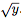

O objetivo desta atividade é a familiarização com a infraestrutura de simulação do computador IAS, e programação em linguagem de máquina.
Nesta atividade você deverá escrever um pequeno programa em linguagem de máquina do computador IAS para calcular a velocidade inicial de um projétil que precisa atingir um alvo a uma determinada distância, como ilustrado na Figura 1.
Figura 1: Ilustração da trajetória de um projétil no espaço bidimensional.
Suponha que o projétil seja lançado a 45o do eixo x. Então você pode usar a fórmula:
Note que o IAS não possui instrução para a raiz quadrada. Para isso, você deve calcular uma expressão que aproxima o valor da raiz quadrada para números inteiros. Tal expressão aproxima um chute para o valor da raiz quadrada. Seja k um chute aproximado para . Comece supondo que
No capítulo 5 do documento programando o IAS você encontrará detalhes sobre as operações do IAS e sua codificação em linguagem de máquina, e no final desse documento existe um sumário de todas as instruções.
O simulador parte do pressuposto de que o programa já está na memória quando a execução é iniciada. Para carregar as instruções e dados iniciais na memória você deve fornecer um "mapa de memória" ao simulador. O mapa de memória contém uma lista de valores que serão utilizados para iniciar a memória da máquina antes da execução iniciar. O mapa de memória é um arquivo no formato texto onde cada linha especifica o endereço e o valor que deve ser gravado na palavra de memória associada ao endereço. Você deve escrever seu programa em um arquivo texto que representa um mapa de memória (.hex), onde cada linha consiste de uma coluna representando o endereço e outra representando o valor armazenado na palavra de memória associada àquele endereço, conforme o exemplo abaixo:
000 0110015000
001 0D40000000
...
100 00000088D8
Esse programa exemplo copia o conteúdo da posição 0x100 de memória para o registrador AC (operação 0x01), faz um deslocamento para a direita (operação 0x15) no dado recém obtido e por fim realiza um salto para o endereço de memória 0x400 (operação 0D). Note que todos os endereços e valores no mapa de memória estão representados no sistema hexadecimal.
Você pode introduzir espaços em branco entre os caracteres da segunda coluna (dados/instruções), linhas em branco e comentários para facilitar a leitura. O trecho de código abaixo é equivalente ao anterior:
000 01 100 15 000
001 0D 400 00 000 #isso eh um comentario
...
100 00 00 00 88 D8
Para testar o seu programa você deve usar o simulador do IAS. Para isso, faça o download do simulador através desse link, torne o arquivo executável (chmod +x ias) e utilize o seguinte comando para carregar o seu programa descrito em linguagem de máquina (mapa de memória):
./ias --load=programa.hex
Esse comando inicia a execução a partir do endereço de memória 0x000. Para terminar a execução, você pode realizar um salto para o endereço 0x400 - veja que esse valor representa o número 1024 no sistema decimal, e sabemos que o IAS tem 1024 palavras de memória, que são os endereços de 0x000 a 0x3FF no mapa de memória. Ou seja, ao efetuar um salto para o endereço 0x400, estamos desviando o fluxo de execução para uma posição de memória inexistente, portanto o simulador irá parar a execução e apresentar a mensagem ''Address out of bounds'', que pode ser ignorada.
O script a ser utilizado para verificar a corretude pode ser encontrado em: correcao-lab2.sh.
Endereço da atividade no sistema SuSy: https://susy.ic.unicamp.br:9999/mc404ab/Lab2
Nota: esse apêndice tem caráter de curiosidade, não sendo necessária sua leitura para compreensão do laboratório.
Seja vy0 a velocidade vertical inicial do projétil, vx a velocidade horizontal, g a aceleração da gravidade e t o tempo. As equações de movimento são: